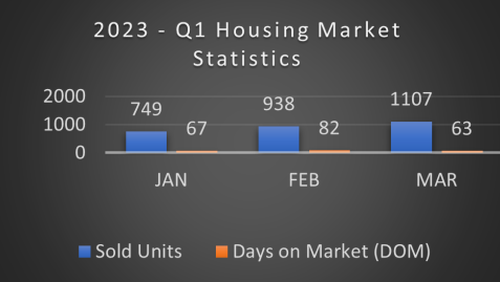

What’s happening in Austin, Travis County Housing Market?
Austin's market is trending towards a sweet spot, inventory is up, and prices are restabilizing after coming off two unprecedented years.
Home sales have declined year-over-year and it is taking a longer time on average to sell a home compared to last year. Buyers continue to gain more options and negotiation power, while sellers have more time to make their next move.
It is critical for you to work with a local REALTOR® who can provide a detailed analysis of market trends in your specific neighborhood and walk through all available options for you to buy or sell with confidence.
- Declutter; entire home cleaning
- Remove pets during showings
- Depersonalize home
- Professional photos
- Landscaping
- Minor repairs
- Painting
Move-in-ready appeal is important as cash-strapped consumers look for properties in which they don't have to sink extra money.
- Decide how much home you can afford
- Check and strengthen your credit
- Explore mortgages, compare rates and fees
- Research first-time home buyer programs
- Choose a real estate agent carefully
- Pick the right house and neighborhood
- Stick to your budget
AUSTIN, Home Sweet Home!
My husband and I moved to Austin as newlyweds almost twenty years ago. At first, it was to try it out for two years, but we quickly fell in love with beautiful Austin. The rest is history!
Austin is the city I've lived in for the longest time in my entire life, and the city where I raised my two sons. It is crazy how much and how quickly this city has grown right in front of my eyes.
I'd love to share everything I know and love about this city and help you find your dream home: whether it is your first, second, third, or fourth here in Austin! We can meet over a cup of coffee, a nice walk or happy hour.
Call or text me at 512.963.6887.
Sincerely,
Upcoming Events
Old Settler's Music Fest!
April 20-23
A four-day celebration that brings together local favorites and award-winning artists from around the world.
Red Poppy Festival
April 28-30
Three days of family-friendly fun, featuring live music, a variety of food and drinks, and a pet parade.
Austin Blues Festival
April 29
An annual one-day event at the Moody Amphitheater at Waterloo Park celebrate blues music live performances from local and national blues musicians.
Eeyore's 58th Birthday Celebration
April 29
Inspired by Eeyore from the Winnie the Pooh stories: featuring live music, food and drinks, and many activities for all ages.
UTOPiAfest Down in the Oaks
May 5-6
What began as a gathering of music lovers on a ranch has evolved into a weekend of camping and live music featuring 35+ bands.
Republic of Texas Biker Rally
May 5-7
The state's largest motorcycle gathering attracts thousands of bikers for rides, parades and music.
Hot Luck Festival
May 25-28
The Hot Luck food & live music festival returns to honor the soul, sweat and DIY diversity of the food and music world.